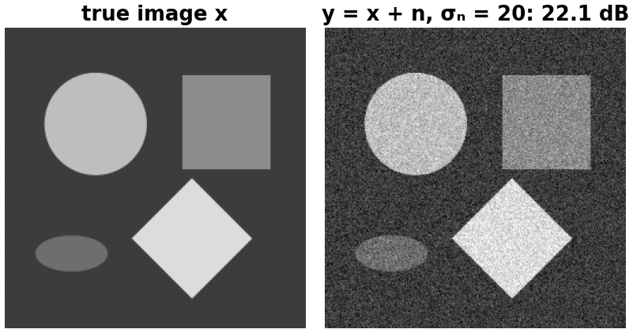
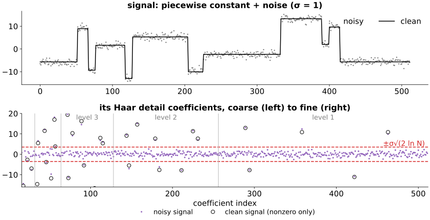
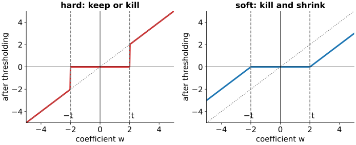
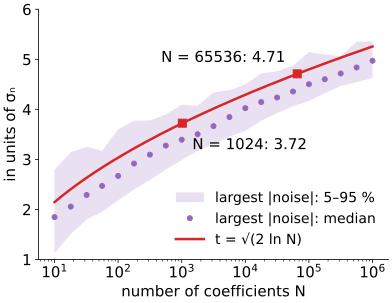
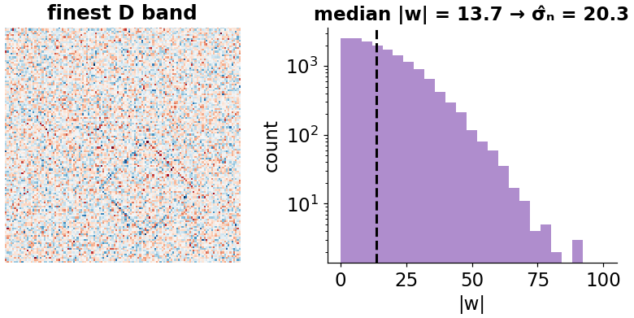
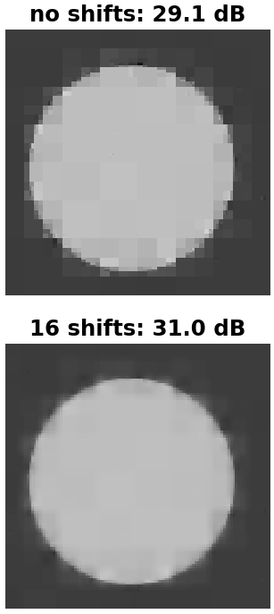
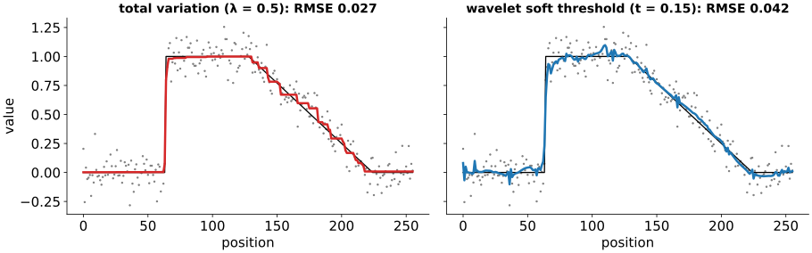

Images are sparse in a wavelet basis: a few large coefficients carry the structure. Noise is not sparse in any basis. Today we use that difference to remove noise.
In an orthonormal basis, white noise stays white noise with the same standard deviation in every coefficient.
Hard and soft thresholding: keep or kill, kill and shrink.
How large the threshold should be (the universal threshold), and how to estimate the noise level from the image itself.
Artefacts tied to the grid, and cycle spinning.
A third view of denoising: a sparsity prior in a basis.
Slides titled The math give the formulas and proofs; the ideas are complete without them.
From Camera noise, SNR and PSNR (day 3): we model the observed image as y = x + n, the true image x plus independent Gaussian noise of standard deviation \sigma_n in every pixel, and measure quality by the PSNR in dB (higher is better).
Goal: estimate x from y alone.

Signal and noise in the wavelet basis

The clean signal has 37 nonzero detail coefficients of 496, all large (circles).
The noise puts a small value, of the same size\sigma_n = 1 everywhere (dots).
So: small coefficients are mostly noise, large ones mostly signal. Keep the large, drop the small.
The math: white noise stays white
Noise vector n with independent \mathcal N(0, \sigma_n^2) entries: \;\mathbb E[n] = 0, \operatorname{Cov}(n) = \sigma_n^2 I.
For an orthogonal transform W (WW^\top = I), the coefficients Wn are again Gaussian (linear combinations of Gaussians) with \operatorname{Cov}(Wn) = W\,\sigma_n^2 I\,W^\top = \sigma_n^2\,WW^\top = \sigma_n^2 I.
Same standard deviation \sigma_n in every coefficient, and still independent.
Geometrically: the noise is a round (isotropic) Gaussian cloud in \mathbb R^N, and a rotation leaves a round cloud round.
The signal, by contrast, is concentrated on few coordinates. Thresholding works coordinate by coordinate.
Hard and soft thresholding

Hard: keep w if |w| > t, else 0. Large coefficients are untouched (low bias), but a noise coefficient that just passes t survives at full size: isolated blips.
Soft: kill if |w| \le t, otherwise shrink towards 0 by t. Smoother results, no blips, but every kept coefficient is too small by t: edges lose contrast.
Example, t = 2: (5, -1.5, 0.4, -3, 2.1) → hard (5, 0, 0, -3, 2.1), soft (3, 0, 0, -1, 0.1).
How large should t be?
Pure noise must be killed: t should exceed (almost) every noise coefficient.
The largest of N independent Gaussian values of standard deviation \sigma_n is about \sigma_n\sqrt{2\ln N}.
Universal threshold (VisuShrink, Donoho & Johnstone 1994): t = \sigma_n\sqrt{2\ln N}. For N = 256^2: \sqrt{2 \cdot 16 \cdot \ln 2} = 4.71, so t \approx 4.7\,\sigma_n. For N = 1024: 3.72\,\sigma_n.
With N = 256^2, on average only 0.16 pure-noise coefficients exceed it.
It kills noise reliably but tends to over-smooth: it also kills real coefficients below 4.7\sigma_n. Level-dependent thresholds chosen from the data (SureShrink, BayesShrink) usually do better; the idea is the same.

The math: the maximum of N Gaussians
For Z \sim \mathcal N(0, 1) and u > 0, the Gaussian tail bound \;P(|Z| > u) \le \dfrac{2}{u\sqrt{2\pi}}e^{-u^2/2}.
With u = \sqrt{2\ln N}: e^{-u^2/2} = 1/N, so the expected number of the N noise coefficients beyond u\sigma_n is N\,P(|Z| > u) \le \frac{2}{\sqrt{2\pi}\sqrt{2\ln N}} \to 0 \quad (N \to \infty).
N = 65\,536: u = 4.71, P(|Z| > u) = 2.5 \cdot 10^{-6}, expected count 0.16.
Donoho & Johnstone showed that soft thresholding at this t has a risk within a factor \approx 2\ln N of an ideal “oracle” that knows which coefficients are signal.
Estimating \sigma_n from the image
\sigma_n is usually unknown. Use the finest diagonal band D (level 1): it is almost all noise, with a few large signal coefficients at edges.
\hat\sigma_n = \frac{\operatorname{median}(|w|)}{0.6745} \quad \text{over the level-1 D coefficients.}
For pure Gaussian noise, the median of |w| is 0.6745\,\sigma_n.
The median barely moves when a few values are huge; the standard deviation would be dragged up by the edges.
Example: D coefficients (0.8, -2.1, 0.3, 14, -1.2, 0.5, -0.9, 1.6, -25): median |w| = 1.2, \hat\sigma_n = 1.78; the standard deviation is 9.6.
Caveat: fine texture also lives in D. On a textured image \hat\sigma_n comes out too large.

Leave the approximation alone
Threshold only the detail bands; keep LL as it is.
LL is small (here 16 \times 16 of 256 \times 256) and holds almost all the energy: every LL coefficient is large compared with \sigma_n and would survive anyway, but soft thresholding would shift the brightness.
The noise in LL is averaged over 2^L \times 2^L pixels; it is the details that carry most of the noise.
Try it: wavelet shrinkage
Artefacts and cycle spinning
The decimated transform is shift-variant (previous unit), so the errors of thresholding are tied to the grid: Haar leaves blocks, Daubechies wavelets small ringing patterns next to edges.
Cycle spinning (Coifman & Donoho 1995):
shift the image by (\Delta x, \Delta y),
denoise,
shift back,
average over many shifts.
The grid artefacts land in different places for each shift and average out. Shapes image, Haar, soft, t = 3\hat\sigma_n: 29.1 dB → 30.3 dB (4 shifts) → 31.0 dB (16 shifts). Averaging over all shifts equals the undecimated (translation-invariant) wavelet transform.

A third view: a prior on the coefficients
Other units denoise by minimising data + λ · prior:
Ising/MRF day (gmrf): a prior on neighbouring pixels; total variation (TV) penalises \sum |x_{p+1} - x_p| (as a flow: TV flow).
Wavelet shrinkage: a prior on coefficients in a basis: soft thresholding with t = \lambda is the exact minimiser of \tfrac12\|y - x\|^2 + \lambda\,\|Wx\|_1 \qquad (W \text{ orthonormal}), “close to the data, few large coefficients”. A sparsity prior. With a non-orthonormal W, a blur or missing data there is no one-line answer: the sparse representations day.

The math: soft thresholding minimises an \ell^1 energy
Since W is orthonormal, \|y - x\|^2 = \|Wy - Wx\|^2. With c = Wx, w = Wy: \tfrac12\|y - x\|^2 + \lambda\|Wx\|_1 = \sum_i \Big(\tfrac12(w_i - c_i)^2 + \lambda|c_i|\Big): one independent scalar problem per coefficient.
Minimise f(c) = \tfrac12(w - c)^2 + \lambda|c|. For c > 0: f' = c - w + \lambda = 0 \Rightarrow c = w - \lambda, valid if w > \lambda. For c < 0: c = w + \lambda if w < -\lambda. Otherwise the minimum is at the kink c = 0 (subgradient 0 \in [-\lambda, \lambda] + (0 - w), i.e. |w| \le \lambda).
Together: c = \operatorname{sign}(w)\max(|w| - \lambda, 0), the soft threshold with t = \lambda.
Hard thresholding minimises \tfrac12(w - c)^2 + \tfrac{t^2}{2}[c \ne 0]: an \ell^0 penalty (count of nonzeros).
Summary
An orthonormal transform maps white noise to white noise of the same \sigma_n; the signal is sparse. Small coefficients: noise; large ones: signal.
Hard thresholding keeps or kills (blips); soft kills and shrinks (smooth, loses contrast).
Universal thresholdt = \sigma_n\sqrt{2\ln N} (4.7\sigma_n for 256^2) kills pure noise but over-smooths.
Estimate \hat\sigma_n = \operatorname{median}|w|/0.6745 on the finest D band; texture inflates it. Leave LL alone.
Cycle spinning averages away grid artefacts.
Soft thresholding = minimiser of data + \lambda\|Wx\|_1: a sparsity prior, beside TV and the MRF priors.